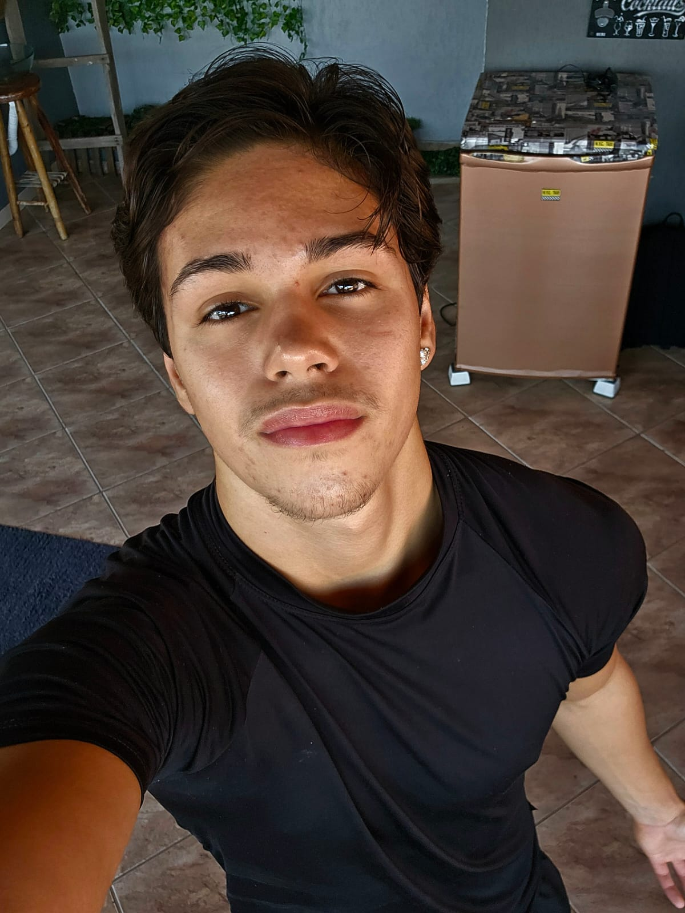

Curriculum

Victor Vernizzi de Oliveira
Programming Student
I am a high school student and I am currently studying at ETEC de Poá with technical qualification in Systems Development. I am taking courses in the development area FullStack,where I am acquiring knowledge in HTML, CSS, JavaScript, Bootstrap, DOM, React.js, Node.js, Express.js, APIs, MySQL e MongoDB . I have a great interest in expanding my expertise and I am always looking for new challenges to develop myself and apply my skills in creating complete technological solutions.